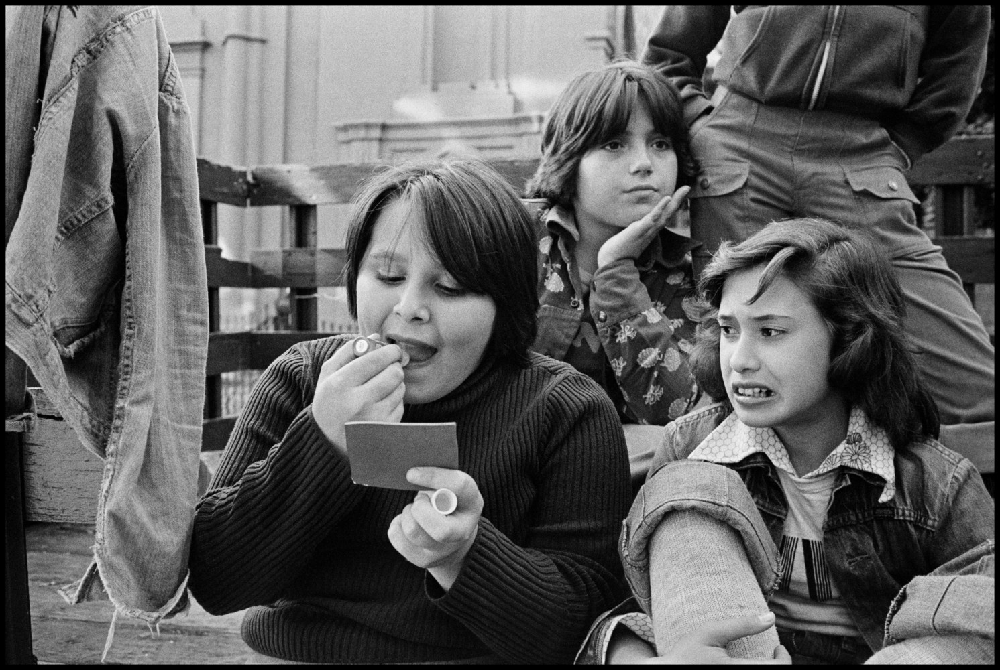
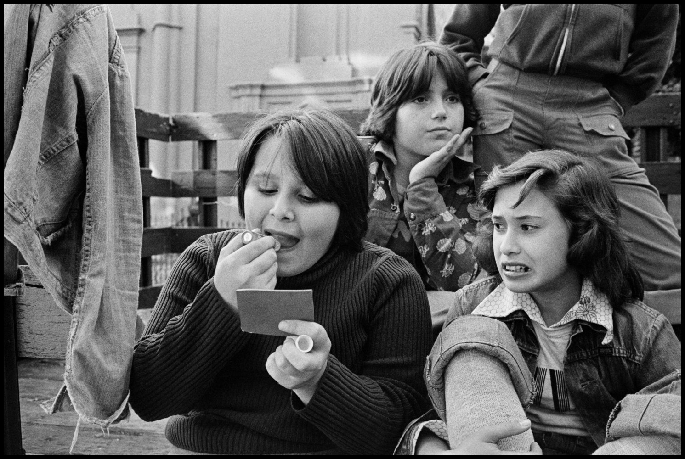

SUSAN MEISELAS
"La macchina fotografica è una scusa per essere in un posto a cui altrimenti non apparterresti. Mi dà sia un punto di connessione che un punto di separazione"- Susan Meiselas
Susan Meiselas ha conseguito la laurea presso il Sarah Lawrence College e il master in educazione visiva presso l'Università di Harvard. Il suo primo importante saggio fotografico si concentrava sulla vita delle donne che facevano spogliarello alle fiere di campagna del New England. Ha fotografato i carnevali per tre estati consecutive mentre insegnava fotografia nelle scuole pubbliche di New York. Carnival Strippers è stato pubblicato da Farrar, Straus & Giroux nel 1976. Una selezione è stata installata al Whitney Museum of Art nel giugno 2000. Il libro originale è stato rivisto e ristampato dal Whitney Museum e Steidl Verlag nel 2003.
Meiselas è entrato in Magnum Photos nel 1976 e da allora ha lavorato come fotografo freelance. È conosciuta soprattutto per la sua copertura dell'insurrezione in Nicaragua e la sua documentazione sulle questioni relative ai diritti umani in America Latina, che sono state pubblicate ampiamente in tutto il mondo. Nel 1981, Pantheon ha pubblicato la sua seconda monografia, Nicaragua: June 1978 – July 1979, che è stata ristampata da Aperture, autunno 2008.
Progetto: RAGAZZE DI PRINCE STREET
Come il quartiere natale di Susan Meiselas ha prodotto uno dei suoi lavori più influenti: uno studio sull'adolescenza, la femminilità e la gentrificazione di New York.
 
